招新海报
社团招新海报。
Portfolio 2026
我是宋雨珊
高中文科生，政史地选科
具有一些文科生的基本文化素养（高考语文125）
大学工科生，计算机科学与技术专业
熟悉各类AI工具以及编程软件的使用（GPT、codex、Gemini......）
兼具文科/理科思维，也算是“刚柔并济”了
About
文科专业的打底让我有了表达能力和审美感知，计科专业的学习让我有了逻辑思维和问题拆解能力
多次活动策划与运营经历锻炼了我落地执行的能力和处变不惊的稳如老狗的状态
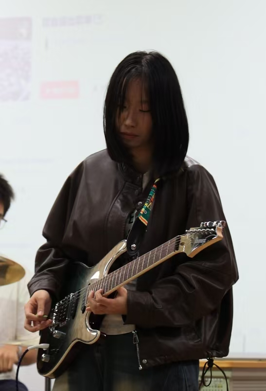
首都经济贸易大学 · 计算机科学与技术
我具备较丰富的新媒体运营、活动策划执行与数据整理经验，熟悉公众号运营、内容策划、活动推广、用户反馈整理及基础数据复盘。
我从 0 到 1 运营了社团公众号，账号粉丝破千、总浏览量过万；同时参与过美团校园业务、音乐社团活动、乐队采访、音乐节及 Livehouse 现场执行等项目，具备较强的内容感知、现场协同和用户沟通能力；曾参与美赛相关项目，在现场竞演数据分析与热度预测模型中承担数据分析、数据清洗工作。
熟悉 PS、Canva、剪映、PR、即梦等内容制作工具，也能使用 Excel、SQL、Python 进行基础数据整理，并熟练借助 AI 工具辅助内容创作、资料整理和运营执行。性格认真负责，执行力强，能够适应高频沟通和多任务推进，希望在互联网、文娱内容、产品运营及活动运营方向持续积累实践经验。
Design Works
以下是我的一些个人设计
社团招新海报。

将招募信息拆成可快速浏览的模块，方便社群和朋友圈传播。
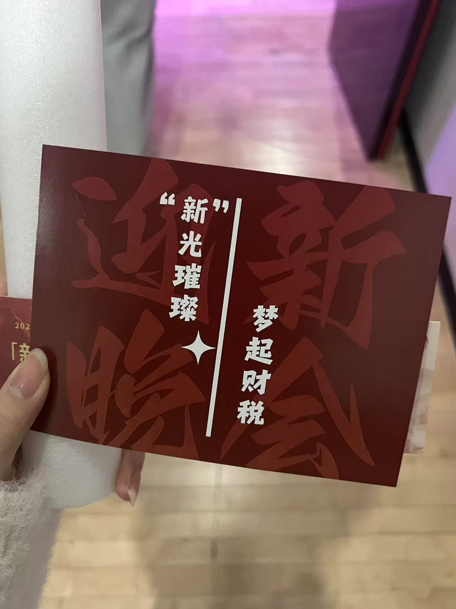
结合活动氛围做小型纸质物料，兼顾情绪表达与识别度。
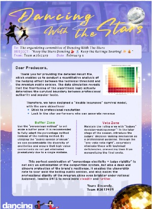
参与大型现场竞演数据分析与热度预测项目，负责数据分析和数据清洗。
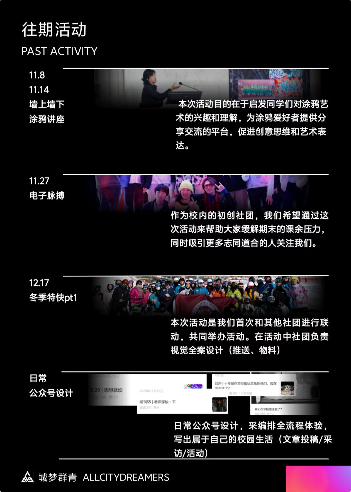
社团招新与往期活动展示页面，整合活动信息、社团经历和公众号内容入口。
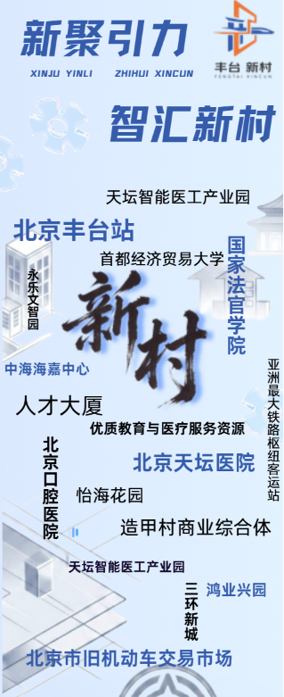
围绕“新村”概念完成信息视觉整合，用版式呈现区域资源、交通节点与公共服务信息。
Photography
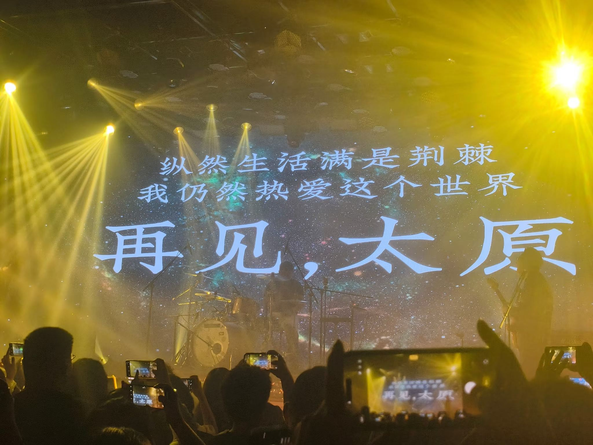
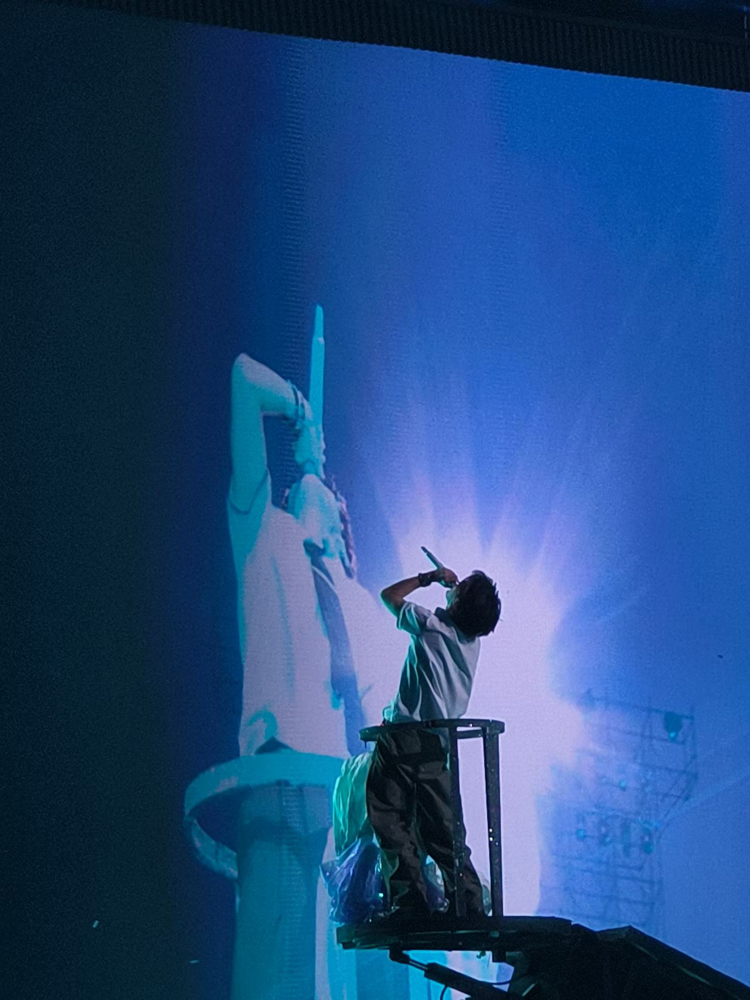
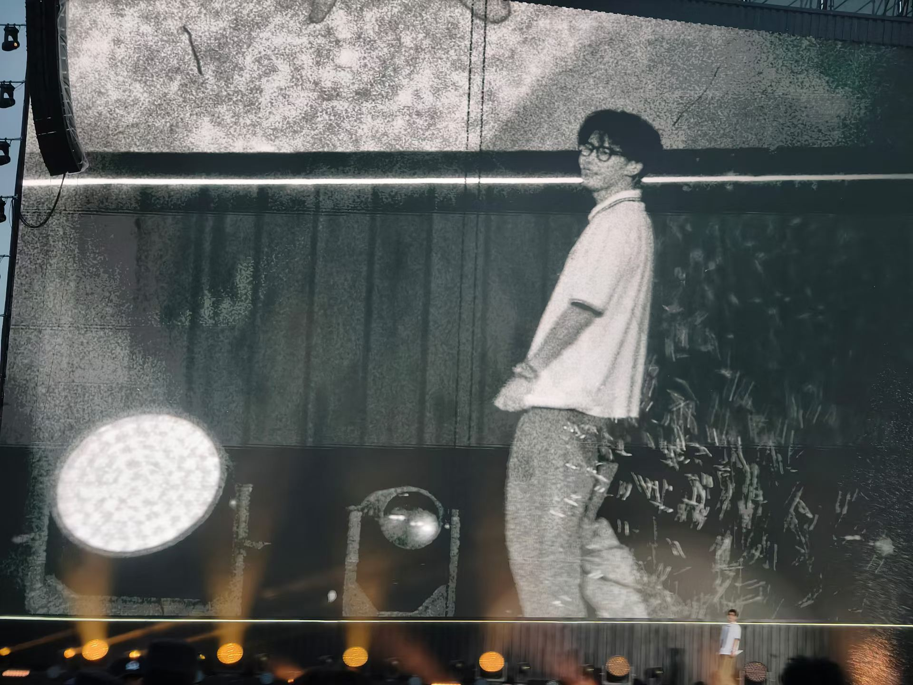
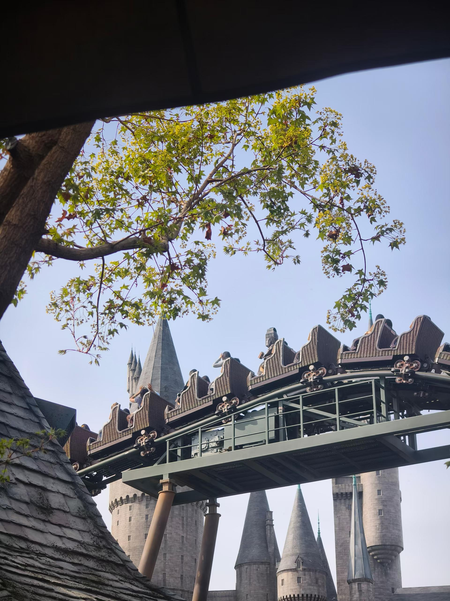
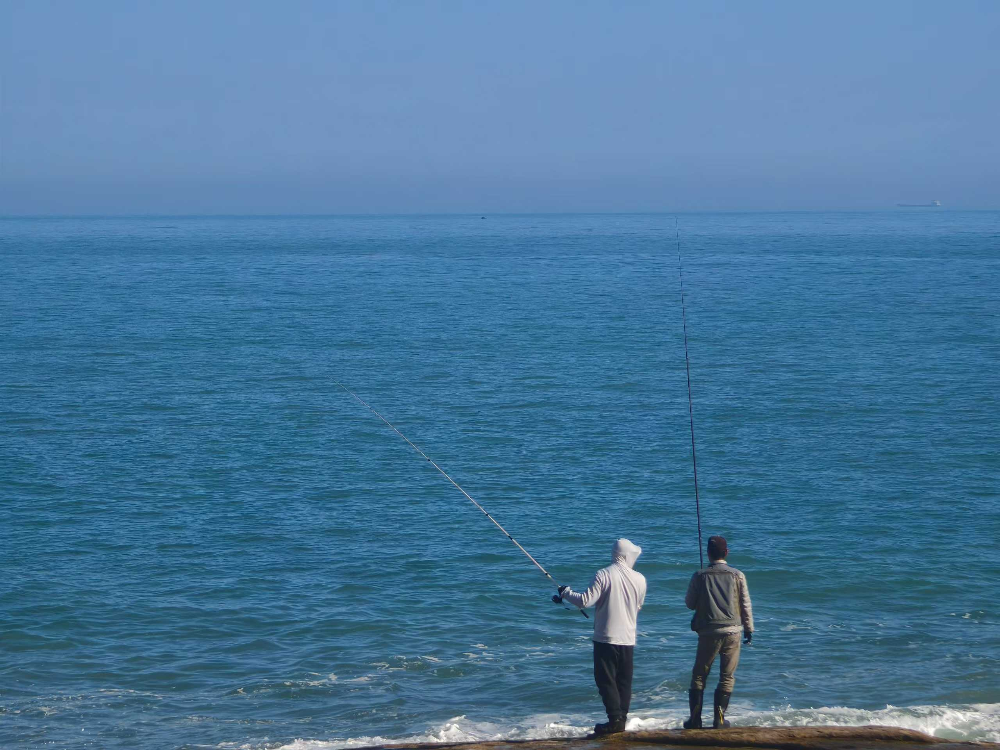
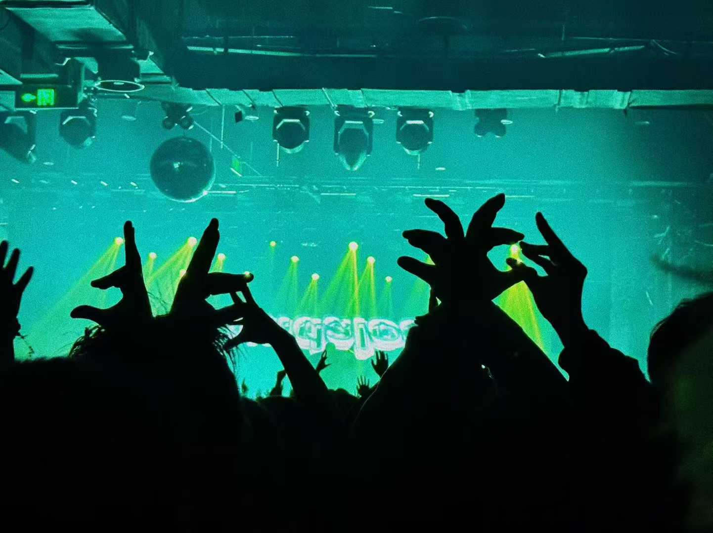
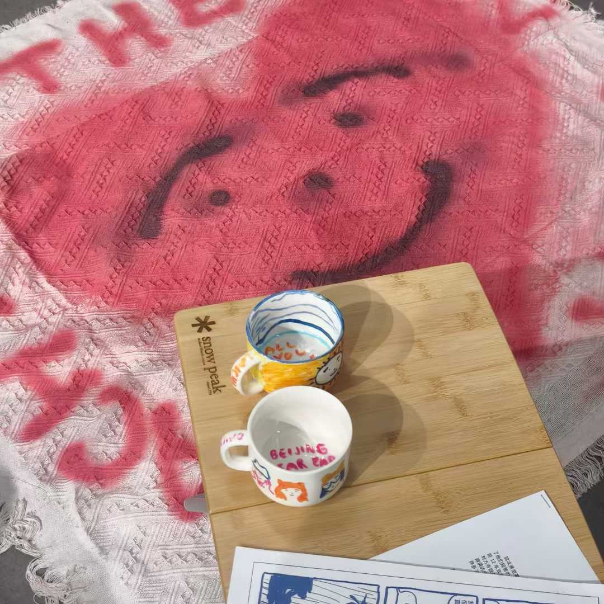
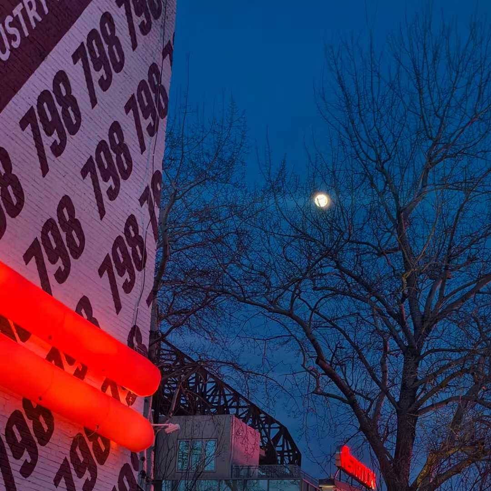
Articles
Video Works